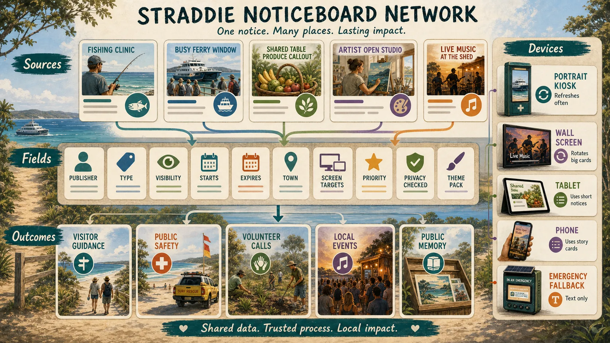

Pipeline
Boring files, flexible screens.
A public notice starts as a simple markdown file, gets checked, then adapts to local screens without forcing every publisher into the same visual style.
Process
One notice, many places.
The first five cards show the publishing flow. The next five show the screen and fallback shapes that can receive the same approved file.

Device location IDs
Every screen needs a name, place and fallback mode.
The markdown only becomes useful when devices around the island know where they are, what shape they are, what assets they have locally, and what to do offline.
Markdown contract
Frontmatter is the shared language.
Repo files